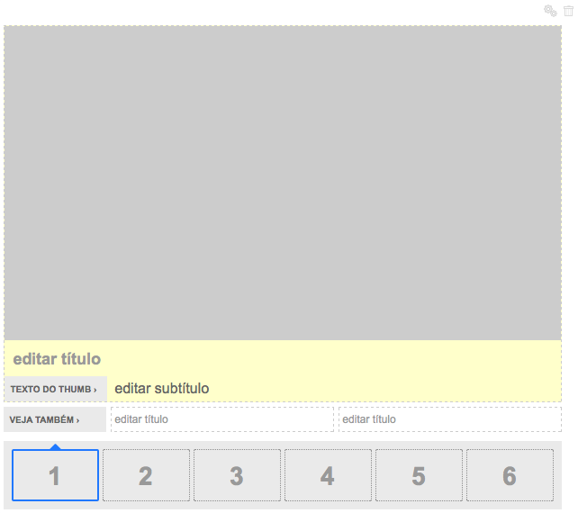
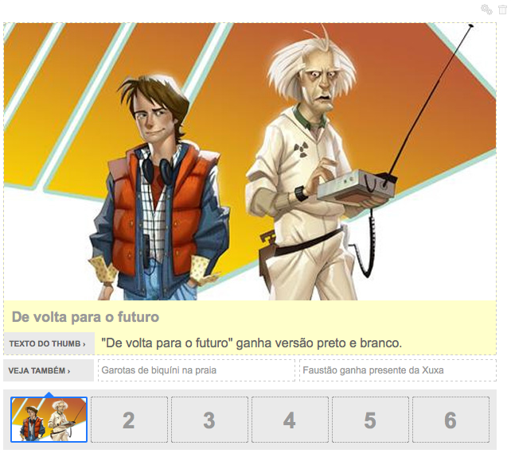
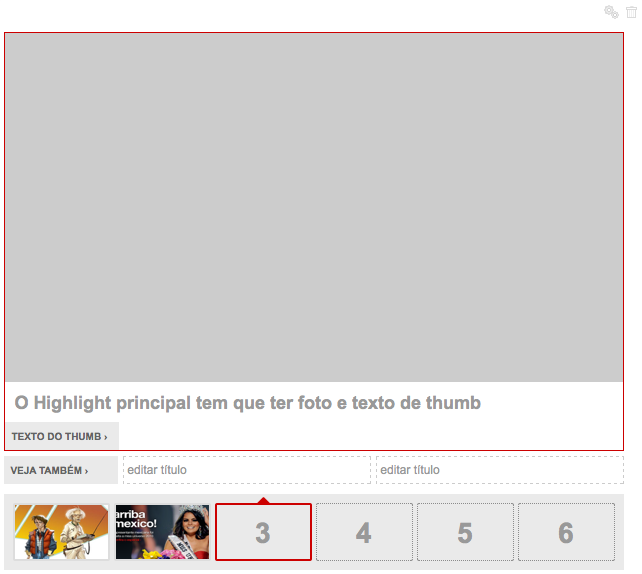

- v1.0.0 (02-06-2011)
Carrossel¶
grid
O box carrossel ocupa 8 colunas do grid, devendo assim estar incluído em uma área que possua 620px.
Dependências¶
É necessária a inclusão de algumas bibliotecas/componentes para sua utilização correta:
- CMA
- jQuery v1.4.4
- jQuery.UI v1.8.6 - core, widget, sortable, dialog
- libby.modalbox
- CDA
- jQuery v.1.4.4
- jQuery.UI v1.8.6 - core, widget
Instalação¶
Para utilizar esta funcionalidade do libby, inclua a seguinte app como INSTALLED_APPS:
INSTALLED_APPS = [
#...
'libby.componentes.carrossel',
#...
]
migration
Não se esqueça de rodar as migrations após instalar a app. Estas migrations criam o box template e os highlight templates no banco.
photo
Este componente utiliza dois tamanhos de foto: 125x85 e 620x349.
Siga as instruções da página de instalação para que estes tamanhos estejam disponíveis para seleção.
Associação¶
O carrossel é um box e como tal, precisa ser associado a uma área qualquer do template da página em que se deseja usá-lo.
css
As cores do carrossel devem ser sobrescritas com as cores do produto, como pode ser visto na lista de estilos padrão, com cor de exemplo(azul).
Para que a folha de estilo padrão não seja incluída automaticamente, inclua a configuração LIBBY_INCLUDE_CSS_COLORS como False no arquivo de configuração (settings.py).
Utilização¶
Dado que o carrossel está associado a alguma área, para utilizá-lo, basta adicioná-lo a área em questão.
O carrossel será apresentado conforme abaixo:
Um carrossel pode ser composto de 1 a 6 passos, sendo o primeiro obrigatório e os outros 5 opcionais.
Cada passo é composto por:
- Imagem que descreve o passo (Obrigatório)
- Título da Imagem (Opcional)
- Texto do Thumbnail (Obrigatório)
- Destaques Adicionais (Opcional, máximo de 2)
Um passo minimamente preenchido corresponde a imagem abaixo:
Um passo completamente preenchido corresponde a imagem abaixo:
Um carrossel com dois passos preenchidos e um inválido (falta alguma informação):
Após o preenchimento correto do carrossel, quando ele é publicado, ele aparece conforme a imagem abaixo:
E com as cores sobrescritas:
URLs REST¶
O componente de carrossel disponibiliza algumas URLs Rest que são usadas pelo plugin, mas que podem ser usadas por terceiros.
Exclusão de Passo:
Um passo pode ser excluído com a url:
/libby/componentes/carrossel/erasestep/{{box.uuid}}/{{numero_passo}}
onde box.uuid é o uuid do box carrossel que o passo deve ser excluído
e numero_passo é o passo a ser excluído.
Ex: /libby/.../erasestep/e89328ff-5b92-40c0-a47d-7a7b7def1df8/1
Reordenação de Passo:
Um passo pode ser reordenado com a url:
/libby/componentes/carrossel/reorder/{{box.uuid}}/{{ordem_atual}}/{{ordem_destino}}
onde box.uuid é o uuid do box carrossel para o passo reordenado,
ordem_atual é a ordem original do passo
e ordem_destino é a nova ordem do passo.
Ex: /libby/.../reorder/e89328ff-5b92-40c0-a47d-7a7b7def1df8/1/2